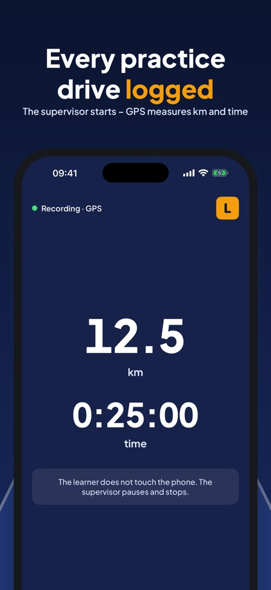
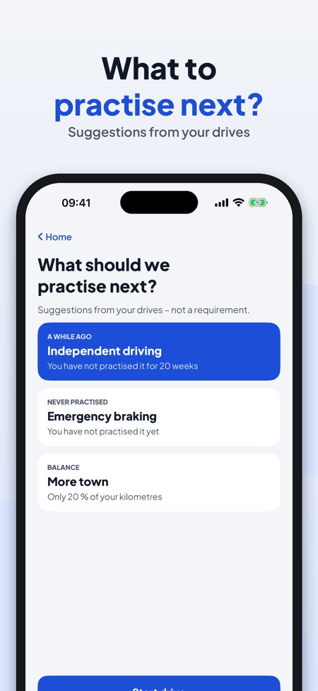
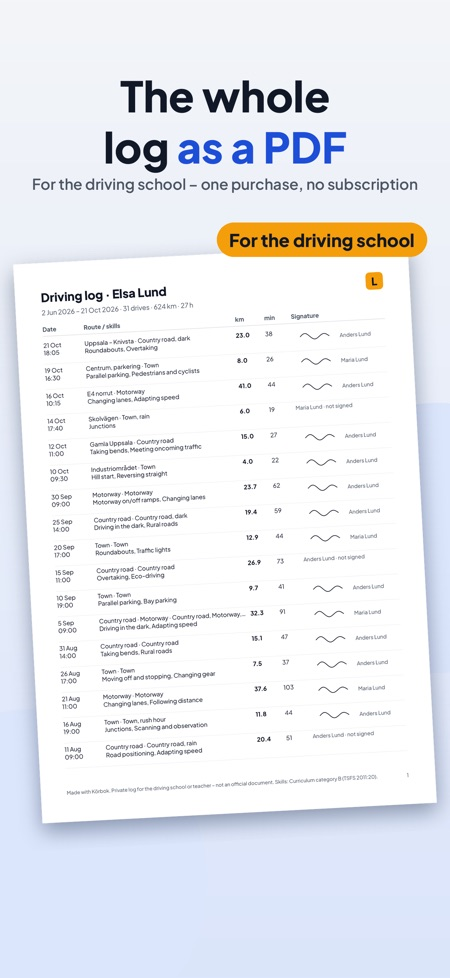

Ajoharjoittelu, ledsagerkørsel. Dark by four? Log dark driving and icy roads – and see when you last practised them. The supervisor starts, GPS measures.



The logbook for private practice driving with a supervisor – in Sweden, Finland and Denmark. No account needed.
The supervisor starts the recording, the iPhone's GPS measures distance and time. After the drive you choose the road type, conditions and the skills you practised, and the supervisor signs on the screen. So you always know how far you have come and what is left before the driving test.
RECORD EVERY DRIVE
• Start, pause and stop – big buttons for the supervisor
• Distance and time with the iPhone's GPS, a route line for every drive
• Add a drive without GPS afterwards
• The learner never touches the phone: the screen while driving is read-only
AFTER THE DRIVE
• Town, country road, motorway, dark, rain, ice, rush hour
• The skills you practised, a note and the supervisor's signature
SKILLS FROM THE CURRICULUM
• Skills list for category B, grouped: manoeuvres, traffic, special conditions
• Each skill: not practised → practised → confident
• The list follows the country: Sweden, Finland or Denmark
SEE HOW FAR YOU HAVE COME
• Kilometres, hours, number of drives and time in the dark
• Your own goal (there is no legal minimum)
• What to practise next: skills you have not done for a while, conditions you have never driven in
BEFORE THE DRIVING TEST
• Date and place of the test, countdown and checklist
• A plan for the last week with the skills that are not confident yet
• Reminders 14, 7 and 1 day before the test
• Links to the official pages
PEOPLE AND REMINDERS
• Learner and up to two supervisors with valid-until dates
• A reminder 30 days before a permit expires
PDF FOR THE DRIVING SCHOOL
• The whole log as a PDF with dates, distance, skills and signatures
• A preview of the PDF, also without a purchase
Recording, trips, totals, the skills list, the checklist, one supervisor and the first three signatures work without a purchase. One purchase (Körbok Full) unlocks PDF export, two supervisors with signature, the "what next" suggestions, statistics for dark, motorway and town, and the plan before the test. No subscription, no ads.
Trips and locations stay on your iPhone. Location is used only while a drive is being recorded. The app can send anonymous usage statistics through Google Analytics for Firebase (e.g. which screens and buttons are used, in-app purchases and the approximate country) – never location or routes. It is sent only if you switch it on (at the start or in Settings).
Körbok is a private practice log, not an official document, and is not affiliated with Transportstyrelsen, Trafikverket, Traficom or Færdselsstyrelsen. Do not use the phone while driving.